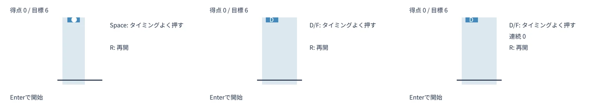
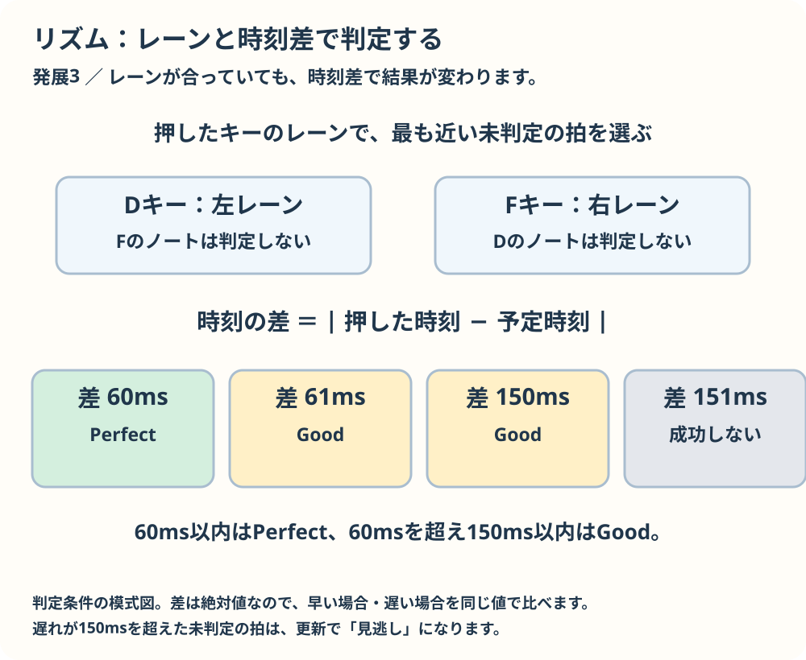

リズムゲームの発展
始める前に
基本編の完成版から始めます。ZIPを展開してできたフォルダーでindex.htmlを開きます。ZIPには基本編の3ファイルが入っています。
WindowsでZIPを展開する（動画）
各段階の変更を上から順に加え、保存したら index.html を開くか再読み込みします。
ステップ 1：2レーンにする
このステップの見本を図で見る
0 % 2 = 0 → D
1拍目はDで判定
1 % 2 = 1 → F
2拍目はF。違うレーンの拍は選ばない
2 % 2 = 0 → D
D、F、Dと交互に並ぶ
ゲーム画面とコードの前後を見る

このステップの見本
const x = 270;
変わったコードの一例（script.js）const x = 265 + beats[i].lane * 65;
見本で確かめること
DとFで交互のレーンを押します。
目標
基本版に判定を追加します。
確認欄までは準備中です。作業を順に進め、確認欄で保存して動作を確かめます。
書く場所と置き換えるコード
レーンを2列分に広げる
作業用フォルダーの script.js で、次の範囲を探して置き換えます。
置き換える範囲
ctx.fillStyle = "#dce8ef"; ctx.fillRect(250, 70, 90, 270);
置き換えるコード
ctx.fillStyle = "#dce8ef"; ctx.fillRect(250, 70, 140, 270);
2つのノーツが並ぶようレーンの幅を140にします。
レーンごとに横位置を変える
作業用フォルダーの script.js で、次の範囲を探して置き換えます。
置き換える範囲
const x = 270;
置き換えるコード
const x = 265 + beats[i].lane * 65;
lane が0なら265、1なら330に描きます。
レーンのキーを描く
作業用フォルダーの script.js で、次の範囲を探して置き換えます。
置き換える範囲
ctx.fillStyle = "#ffffff"; ctx.fillText("●", x + 15, y + 8);
置き換えるコード
ctx.fillStyle = "#ffffff"; ctx.fillText((beats[i].lane === 0 ? "D" : "F"), x + 15, y + 8);
レーン0には D、1には F を表示します。
D と F の操作を案内する
作業用フォルダーの script.js で、次の範囲を探して置き換えます。
置き換える範囲
ctx.fillStyle = "#26334a"; ctx.fillText("Space: タイミングよく押す", 440, 110);
置き換えるコード
ctx.fillStyle = "#26334a"; ctx.fillText("D/F: タイミングよく押す", 440, 110);
操作案内を D/F に変えます。
押されたキーのレーンを決める
作業用フォルダーの script.js で、次の範囲を探して置き換えます。
置き換える範囲
const lane = event.key === " " ? 0 : -1;
置き換えるコード
const lane = key === "d" ? 0 : key === "f" ? 1 : -1;
D は0、F は1、それ以外は−1として受け付けません。
同じレーンのノーツを探す
作業用フォルダーの script.js で、次の範囲を探して置き換えます。
置き換える範囲
if (!judged[i] && Math.abs(elapsed - beats[i].time) < gap) { nearest = i; gap = Math.abs(elapsed - beats[i].time); }
置き換えるコード
if (!judged[i] && beats[i].lane === lane && Math.abs(elapsed - beats[i].time) < gap) { nearest = i; gap = Math.abs(elapsed - beats[i].time); }
入力したレーンと同じ未判定ノーツだけを候補にします。
保存後の確かめ方
保存してゲーム画面を更新する（動画）
index.html を再読み込みします。DとFで交互のレーンを押します。 この段階の見本を開く
小さな練習
判定や表示を変えて比べます。 練習後はコードを元に戻してください。
ステップ 2：連続成功を数える
このステップの見本を図で見る
score = 0 + 1、1 % 3 !== 0
追加点はまだなし
score = 1 + 1、2 % 3 !== 0
連続2回
score = 2 + 1 + 1、3 % 3 === 0
3回目は通常1点と追加1点
ゲーム画面とコードの前後を見る
このステップの見本
if (!judged[i] && elapsed > beats[i].time + 150) { judged[i] = true; message = "見逃し"; }
変わったコードの一例（script.js）if (!judged[i] && elapsed > beats[i].time + 150) { judged[i] = true; message = "見逃し"; combo = 0; }
見本で確かめること
3連続成功で追加の1点を確認します。
目標
基本版に判定を追加します。
確認欄までは準備中です。作業を順に進め、確認欄で保存して動作を確かめます。
書く場所と置き換えるコード
連続成功数を覚える
作業用フォルダーの script.js で、次の範囲を探して置き換えます。
置き換える範囲
let state, startTime, judged, score, message;
置き換えるコード
let state, startTime, judged, score, message, combo;
combo は続けて成功した回数です。
連続数を0から始める
作業用フォルダーの script.js で、次の範囲を探して置き換えます。
置き換える範囲
state = "ready"; startTime = 0; judged = Array(8).fill(false); score = 0; message = "Enterで開始";
置き換えるコード
state = "ready"; startTime = 0; judged = Array(8).fill(false); score = 0; message = "Enterで開始"; combo = 0;
最初に combo を0にします。
見逃したら連続数を戻す
作業用フォルダーの script.js で、次の範囲を探して置き換えます。
置き換える範囲
if (!judged[i] && elapsed > beats[i].time + 150) { judged[i] = true; message = "見逃し"; }
置き換えるコード
if (!judged[i] && elapsed > beats[i].time + 150) { judged[i] = true; message = "見逃し"; combo = 0; }
ノーツを見逃したら combo を0にします。
連続数を表示する
作業用フォルダーの script.js で、次の目印を探し、その直後に書きます。
目印
ctx.fillStyle = "#26334a"; ctx.fillText("D/F: タイミングよく押す", 440, 110);
書き足すコード
ctx.fillText("連続 " + combo, 440, 155);
現在の連続数を画面に描きます。
連続成功で追加点を付ける
作業用フォルダーの script.js で、次の目印を探し、その直後に書きます。
目印
judged[nearest] = true; score++;
書き足すコード
combo++; if (combo % 3 === 0) score++;
成功ごとに連続数を1増やし、% 3 の余りが0になる3回ごとに1点を追加します。
保存後の確かめ方
3連続成功で追加の1点を確認します。 この段階の見本を開く
小さな練習
判定や表示を変えて比べます。 練習後はコードを元に戻してください。
ステップ 3：判定を細かく分ける
このステップの見本を図で見る
Math.abs(2040 - 2000) = 40 <= 60
Perfect。通常1点
60 < Math.abs(2100 - 2000) = 100 <= 150
Good。通常1点
2160 > 2000 + 150
判定前のupdateで見逃しになる
ゲーム画面とコードの前後を見る
このステップの見本
message = "成功！";
変わったコードの一例（script.js）message = gap <= 60 ? "Perfect" : "Good";
見本で確かめること
線に近いタイミングと少しずれたタイミングを比べます。
目標
基本版に判定を追加します。
確認欄までは準備中です。作業を順に進め、確認欄で保存して動作を確かめます。
書く場所と置き換えるコード
時刻の差で評価を変える
作業用フォルダーの script.js で、次の範囲を探して置き換えます。
置き換える範囲
message = "成功！";
置き換えるコード
message = gap <= 60 ? "Perfect" : "Good";
gap が60ミリ秒以下なら Perfect、それより大きく成功範囲内なら Good を表示します。

Dは左、Fは右のレーンを調べます。押した時刻の差が60ms以内ならPerfect、150ms以内ならGoodです。まずレーンを合わせ、次に時刻差を比べましょう。
推奨rhythm-ext-lanesから判定が主題と分かる名前へ変更。絶対差60/61/150/151を例示。遅れ150超はupdateで見逃し。
保存後の確かめ方
線に近いタイミングと少しずれたタイミングを比べます。 この段階の見本を開く
小さな練習
判定や表示を変えて比べます。 練習後はコードを元に戻してください。